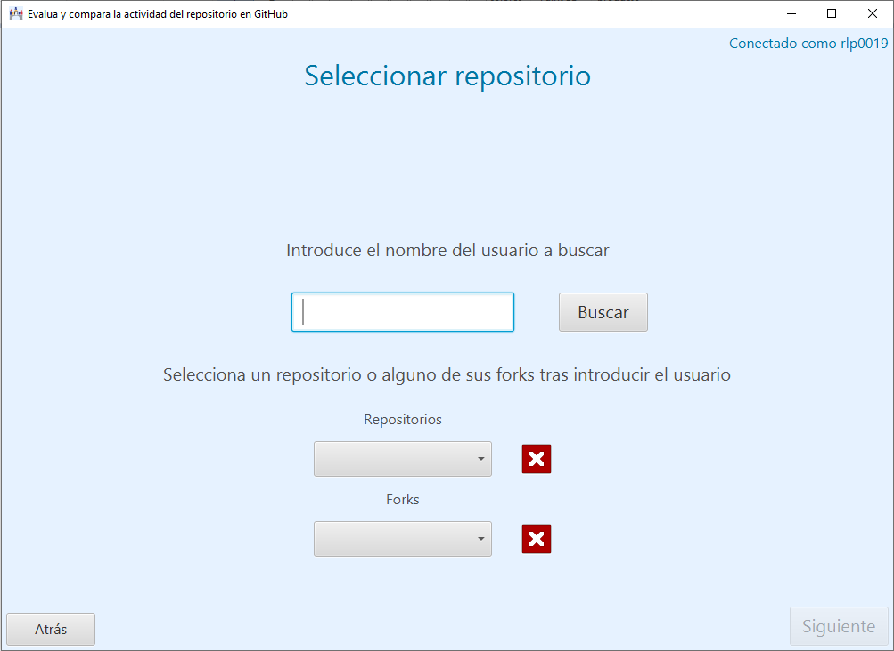

En esta apantalla aparece un campo de texto para introducir el nombre de un usuario cualquiera registrado en la plataforma para obtener los repositorios de los que es propietario y cargarlos en la lista una vez que se pulsa el botón Buscar.
También aparecen dos botones:
- Siguiente carga la pantalla resultados para mostrar las métricas calculadas para el repositorio seleccionado.
- Atrás para volver a la pantalla anterior.
